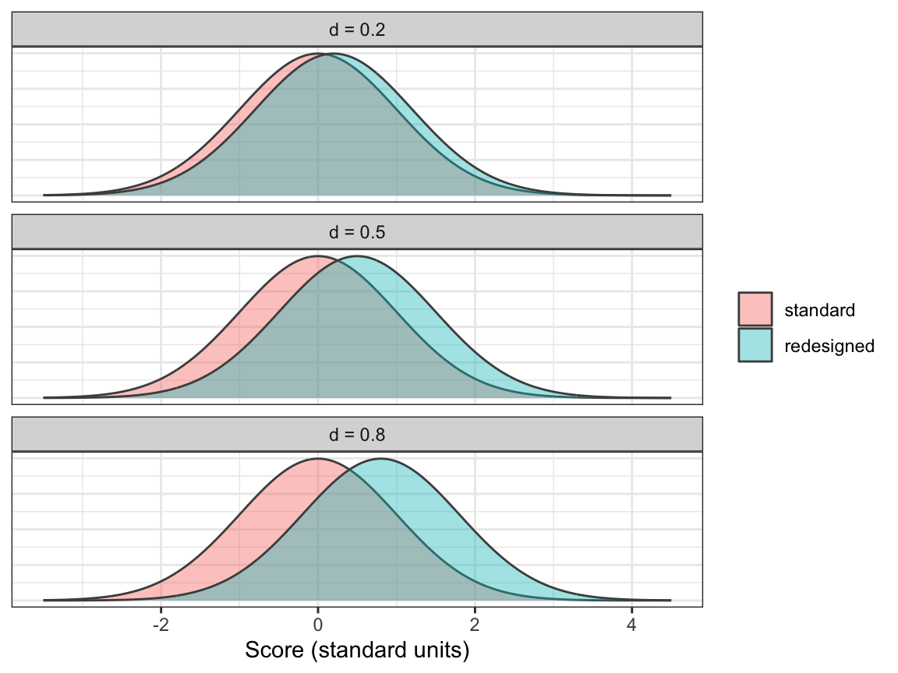

library(tidyverse)
library(behdslabs)
library(effectsize)
library(afex)21 Effect Size
Written for this book by Giorgio Arcara, with an AI assistant (Claude). This chapter is not in Irizarry’s Introduction to Data Science.
A p-value answers one question: could a difference this large easily arise by chance? It does not say how large the difference is. With enough participants, even a negligible difference gets a tiny p-value, and with too few, a large difference can get a large one (Chapter 14). An effect size answers the other question: how large is the difference, or how strong is the association? In Chapter 17, two studies had the same 5-point difference in means but very different spreads, and the t-test gave two different conclusions. An effect size describes that situation directly, and it does not depend on the sample size.
This chapter shows how to compute the most common effect sizes in R, for the tests of the previous chapters: the t-test, the paired t-test, the Wilcoxon test, and the ANOVA. The companion chapter, Chapter 22, uses the same effect sizes to plan how many participants a study needs.
21.1 The idea
The simplest effect size is the difference itself, in the units of the outcome: “desktop users score 13 points higher on a 100-point scale”, “incongruent trials are 48 ms slower”. This unstandardized effect size is often the most useful one, because it can be read directly by anyone who knows the measure.
When the units are arbitrary, as for most questionnaire scores, or when we want to compare studies that used different measures, we use a standardized effect size, which has no units. There are two main families:
- Differences between means, divided by a standard deviation. The best known is Cohen’s d, the difference in means in standard deviation units (see Section 15.3).
- Measures of association, such as the correlation \(r\) (Chapter 16) and, for the ANOVA, the share of the variation in the outcome that is related to a factor (\(\eta^2\), eta squared).
To get a feeling for Cohen’s d, the figure shows two normal distributions whose means differ by 0.2, 0.5 and 0.8 standard deviations:

Even with d = 0.8, which is usually called “large”, the two distributions overlap a lot. One way to put this into words is the probability of superiority: the probability that a randomly chosen person from the second group scores higher than a randomly chosen person from the first. For normal distributions with the same standard deviation, it is pnorm(d / sqrt(2)):
d <- c(0.2, 0.5, 0.8)
round(pnorm(d / sqrt(2)), 2)
#> [1] 0.56 0.64 0.71With d = 0.5, a user of the redesigned version beats a user of the standard version only about 64% of the time, compared with 50% when there is no difference at all.
Cohen proposed rules of thumb for “small”, “medium” and “large” effects, which you will find in many papers:
| Effect size | Small | Medium | Large |
|---|---|---|---|
| Cohen’s d | 0.2 | 0.5 | 0.8 |
| Correlation \(r\) | 0.1 | 0.3 | 0.5 |
| \(\eta^2\) (ANOVA) | 0.01 | 0.06 | 0.14 |
| Cohen’s f (ANOVA) | 0.10 | 0.25 | 0.40 |
Like the 0.05 threshold for p-values, these are conventions, not laws. Cohen himself proposed them only for when nothing better is known. A 30 ms slowdown can be trivial in a lab task and important for a driver braking.
21.2 The effectsize package
We could compute every effect size by hand, as we did for Cohen’s d in Chapter 17. The effectsize package does it for us, for most tests, and also gives a confidence interval for each effect size. Install it once with install.packages("effectsize").
Suppose eight users rated each of two versions of an app on the System Usability Scale (SUS), from 0 to 100, and the two groups of users are different people:
standard <- c(62, 70, 55, 68, 74, 60, 66, 58)
redesigned <- c(71, 78, 64, 69, 83, 72, 66, 75)
cohens_d(redesigned, standard)
#> Cohen's d | 95% CI
#> ------------------------
#> 1.28 | [0.17, 2.34]
#>
#> - Estimated using pooled SD.The output gives Cohen’s d and its 95% confidence interval. The interval is very wide, from about 0.2 to above 2: with eight users per group, we know that the redesigned version scores higher, but not by how much. This is the usual situation with small samples, and the reason why an effect size should always be reported with its confidence interval.
The function interpret_cohens_d() translates a value into Cohen’s labels:
interpret_cohens_d(c(0.1, 0.3, 0.6, 1.2))
#> [1] "very small" "small" "medium" "large"
#> (Rules: cohen1988)21.3 Two independent groups: the t-test
In Chapter 17 we compared UX scores of desktop and mobile users in the ux_scores dataset. First, the unstandardized effect: the difference in means, with its confidence interval, which t.test() already gives us.
tt <- t.test(ux_score ~ device, data = ux_scores)
tt$estimate
#> mean in group desktop mean in group mobile
#> 59.1 45.7
tt$conf.int
#> [1] 11.7 15.0
#> attr(,"conf.level")
#> [1] 0.95Desktop users score about 13.4 points higher. Now the standardized version. cohens_d() accepts the same formula as t.test():
cohens_d(ux_score ~ device, data = ux_scores)
#> Cohen's d | 95% CI
#> ------------------------
#> 1.20 | [1.05, 1.35]
#>
#> - Estimated using pooled SD.This is the same value we computed by hand with the pooled standard deviation in Chapter 17, now with a confidence interval. The sign depends on the order of the groups: cohens_d() subtracts the second level of the factor (mobile) from the first (desktop), as t.test() does.
Two variants are worth knowing:
- Hedges’ g corrects a small upward bias of d in small samples. With hundreds of participants, as here, the two are identical; with ten per group, g is a few percent smaller.
- With
pooled_sd = FALSE, the difference is divided by the average of the two standard deviations instead of the pooled one. This matches Welch’s t-test, which does not assume equal standard deviations.
hedges_g(ux_score ~ device, data = ux_scores)
#> Hedges' g | 95% CI
#> ------------------------
#> 1.20 | [1.05, 1.35]
#>
#> - Estimated using pooled SD.
cohens_d(ux_score ~ device, data = ux_scores, pooled_sd = FALSE)
#> Cohen's d | 95% CI
#> ------------------------
#> 1.19 | [1.02, 1.36]
#>
#> - Estimated using un-pooled SD.21.4 Paired designs
In a within-subjects design, the same participants are measured in both conditions. We use the simulated Stroop data from Chapter 17: 20 participants, each with a congruent and an incongruent reaction time.
set.seed(10)
n <- 20
speed <- rnorm(n, 500, 80)
stroop <- data.frame(participant = sprintf("P%02d", 1:n),
congruent = round(speed + rnorm(n, 0, 20)),
incongruent = round(speed + 30 + rnorm(n, 0, 20)))
mean(stroop$incongruent - stroop$congruent)
#> [1] 47.6The unstandardized effect is the average slowdown, about 48 ms. For the standardized effect, there is a choice to make: which standard deviation do we divide by? The repeated_measures_d() function offers several options. The two most common are:
repeated_measures_d(stroop$incongruent, stroop$congruent, method = "z")
#> d (z) | 95% CI
#> --------------------
#> 2.08 | [1.31, 2.85]
#>
#> - Adjusted for small sample bias.
repeated_measures_d(stroop$incongruent, stroop$congruent, method = "av")
#> d (av) | 95% CI
#> ---------------------
#> 0.68 | [0.54, 0.82]
#>
#> - Adjusted for small sample bias.- \(d_z\) divides the average difference by the standard deviation of the differences. It is the effect size behind the paired t-test, and the one used to plan a paired study (Chapter 22).
- \(d_{av}\) divides the average difference by the average of the standard deviations of the two conditions. It is on the same scale as the d of a between-subjects study.
The two values are very different. Participants differ a lot in overall speed, so the standard deviation of each condition is large, and \(d_{av}\) is moderate. But each participant is consistently slower on incongruent trials, so the differences vary little, and \(d_z\) is very large. Neither is wrong: they answer different questions. \(d_z\) says how consistent the effect is across participants. \(d_{av}\) says how large it is compared with the differences between people. Always say which one you report. Both are corrected for small-sample bias by default, like Hedges’ g.
21.5 The Wilcoxon test
The Wilcoxon test compares ranks, not means, so its natural effect size is also based on ranks: the rank-biserial correlation. It goes from −1 to 1. It is the probability that a value from the first group is higher than a value from the second, minus the probability of the opposite. We use the small reaction-time sample from Chapter 17:
set.seed(3)
rt_small <- reaction_times |>
group_by(sex) |>
slice_sample(n = 20) |>
ungroup()
rb <- rank_biserial(rt_ms ~ sex, data = rt_small)
rb
#> r (rank biserial) | 95% CI
#> --------------------------------
#> 0.57 | [0.28, 0.77]The value is positive because the first group, Female, tends to have the higher reaction times. Converted into a probability, \((r + 1)/2\), it says that a randomly chosen woman in this sample was slower than a randomly chosen man in about 79% of the pairs. Like the test itself, this effect size is not affected by a single extreme value, which can inflate the standard deviation and distort Cohen’s d.
For paired data, the same function takes paired = TRUE:
rank_biserial(stroop$incongruent, stroop$congruent, paired = TRUE)
#> r (rank biserial) | 95% CI
#> --------------------------------
#> 1 | [1.00, 1.00]The value is 1, the maximum: every participant was slower on incongruent trials.
21.6 ANOVA
We use the two designs of Chapter 18: the attention experiment, with three distractor conditions between subjects, and the three-condition Stroop task within subjects.
set.seed(2026)
n <- 20
attention <- tibble(
id = factor(sprintf("P%02d", 1:(3 * n))),
condition = factor(rep(c("none", "auditory", "visual"), each = n),
levels = c("none", "auditory", "visual")),
errors = round(pmax(0, rnorm(3 * n, mean = rep(c(8, 10, 13), each = n), sd = 3)))
)
fit1 <- aov_ez(id = "id", dv = "errors", data = attention, between = "condition")
fit1
#> Anova Table (Type 3 tests)
#>
#> Response: errors
#> Effect df MSE F ges p.value
#> 1 condition 2, 57 7.46 20.00 *** .412 <.001
#> ---
#> Signif. codes: 0 '***' 0.001 '**' 0.01 '*' 0.05 '+' 0.1 ' ' 1The ANOVA table of afex already includes an effect size, ges, the generalized eta squared. The effectsize package computes it and its relatives, with confidence intervals:
eta_squared(fit1)
#> # Effect Size for ANOVA (Type III)
#>
#> Parameter | Eta2 | 95% CI
#> -------------------------------
#> condition | 0.41 | [0.24, 1.00]
#>
#> - One-sided CIs: upper bound fixed at [1.00].
omega_squared(fit1)
#> # Effect Size for ANOVA (Type III)
#>
#> Parameter | Omega2 | 95% CI
#> ---------------------------------
#> condition | 0.39 | [0.22, 1.00]
#>
#> - One-sided CIs: upper bound fixed at [1.00].
cohens_f(fit1)
#> # Effect Size for ANOVA (Type III)
#>
#> Parameter | Cohen's f | 95% CI
#> -----------------------------------
#> condition | 0.84 | [0.57, Inf]
#>
#> - One-sided CIs: upper bound fixed at [Inf].- \(\eta^2\) is the share of the variation in errors related to the distractor condition. With a single between-subjects factor, the plain, partial and generalized versions are the same.
- \(\omega^2\) (omega squared) estimates the same quantity with less upward bias, so it is a little smaller. It is a better choice for small samples.
- Cohen’s f expresses the same information on a different scale, \(f = \sqrt{\eta^2 / (1 - \eta^2)}\). Power calculations for the ANOVA use f (Chapter 22).
The confidence intervals are one-sided, with the upper limit fixed at 1 (or infinity for f). These effect sizes cannot be negative, and the F test only looks at one side, so the package reports the lower limit only.
Remember that these effect sizes describe the global effect of the factor. For the size of the difference between two specific conditions, use Cohen’s d on that pair, as in the previous sections.
In a within-subjects design, the choice between the versions of eta squared matters:
set.seed(10)
n_part <- 20
speed <- rnorm(n_part, 500, 80)
stroop3 <- tibble(
participant = factor(rep(sprintf("P%02d", 1:n_part), times = 3)),
condition = factor(rep(c("congruent", "neutral", "incongruent"), each = n_part),
levels = c("congruent", "neutral", "incongruent")),
rt = round(rep(speed, 3) + rep(c(0, 10, 45), each = n_part) + rnorm(3 * n_part, 0, 25))
)
fit3 <- aov_ez(id = "participant", dv = "rt", data = stroop3, within = "condition")
eta_squared(fit3)
#> # Effect Size for ANOVA (Type III)
#>
#> Parameter | Eta2 (partial) | 95% CI
#> -----------------------------------------
#> condition | 0.62 | [0.45, 1.00]
#>
#> - One-sided CIs: upper bound fixed at [1.00].
eta_squared(fit3, generalized = TRUE)
#> # Effect Size for ANOVA (Type III)
#>
#> Parameter | Eta2 (generalized) | 95% CI
#> ---------------------------------------------
#> condition | 0.11 | [0.00, 1.00]
#>
#> - Observed variables: All
#> - One-sided CIs: upper bound fixed at [1.00].The partial eta squared, 0.62, leaves out the differences between participants: it compares the effect of the condition only with the variation that remains within each participant. The generalized eta squared, 0.11, keeps the differences between participants in the total. This is the same contrast as between \(d_z\) and \(d_{av}\). Partial eta squared is what most software reports by default. Generalized eta squared, which afex reports, is comparable across between- and within-subjects designs, and is the one recommended for comparing studies. Again: say which one you report.
For the Kruskal–Wallis test, the rank-based counterpart of the one-way ANOVA, the corresponding effect size is the rank epsilon squared:
rank_epsilon_squared(errors ~ condition, data = attention)
#> Epsilon2 (rank) | 95% CI
#> ------------------------------
#> 0.43 | [0.29, 1.00]
#>
#> - One-sided CIs: upper bound fixed at [1.00].21.7 Other tests
The correlation coefficient \(r\) is itself an effect size (Chapter 16). For the chi-square test, the effect size is Cramér’s V (Chapter 20), which effectsize computes from a contingency table with cramers_v().
Effect sizes from different families can be converted into each other, under some assumptions. This is useful when you read papers that report different measures:
d_to_r(0.5)
#> [1] 0.243
eta2_to_f(0.06)
#> [1] 0.25321.8 Pitfalls
Rules of thumb are not a substitute for thinking. Whether an effect is “small” depends on the outcome and the context. Whenever the units of the outcome are meaningful, such as milliseconds, errors, or points on a well-known scale, report the unstandardized difference as well, with its confidence interval.
Effect sizes from small samples are imprecise, and published ones tend to be too large. The confidence interval of d with 20 participants per group is often more than one unit wide. Moreover, small studies reach significance only when their estimate happens to be large. If mainly significant results are published, the published effect sizes overestimate the true ones. Keep this in mind when you take an effect size from a paper to plan a study (Chapter 22).
Measurement error makes effects look smaller, not larger. A standardized effect size divides by the observed standard deviation, which includes measurement error. If the reliability of the outcome is \(\rho_{XX'}\), the observed d is about \(\sqrt{\rho_{XX'}}\) times the d we would see with a perfect measure. With a reliability of 0.6, a true d of 0.5 is observed as about 0.39. The same holds for correlations (see Measurement error and its consequences in Chapter 1).
The same data can give very different standardized effect sizes. As we saw with \(d_z\) and \(d_{av}\), and with partial and generalized eta squared, the answer depends on which standard deviation is in the denominator. Always name the measure you report.
21.9 Further reading
- D. Lakens, Improving Your Statistical Inferences, Chapter 6, Effect Sizes.
- D. Lakens (2013), Calculating and reporting effect sizes to facilitate cumulative science: a practical primer for t-tests and ANOVAs, Frontiers in Psychology, 4, 863, https://doi.org/10.3389/fpsyg.2013.00863. The source of the distinction between \(d_z\) and \(d_{av}\), and between partial and generalized eta squared.
- The documentation of the
effectsizepackage, with a vignette for each family of effect sizes. - D. Navarro, Learning Statistics with R, Chapter 13, The t-test, section on Cohen’s d.
21.10 Exercises
1. In app_engagement_experiment, compute the difference in mean engagement_score between the two ui_versions, with its 95% confidence interval. Then compute Cohen’s d with cohens_d(). Is the effect small, medium or large by Cohen’s rules of thumb?
2. Repeat exercise 1 with hedges_g() and with cohens_d(..., pooled_sd = FALSE). Why are the three values so similar here?
3. Make a boxplot of error_rate_pct by ui_version. Compute both Cohen’s d and the rank-biserial correlation. Which one would you report, and why?
4. Run a one-way between-subjects ANOVA of engagement_score by cohort with aov_ez() (create an id column first, as in Chapter 18). Compute \(\eta^2\), \(\omega^2\) and Cohen’s f. Why is \(\omega^2\) smaller than \(\eta^2\)?
5. Using ux_scores, draw a random sample of 10 users per device (use slice_sample()), and compute Cohen’s d. Repeat this 1,000 times and make a histogram of the 1,000 values of d. Compare it with the d computed on the full dataset. In what proportion of the samples is d more than 1.5 times the full-data value? What does this tell you about effect sizes reported by small studies?